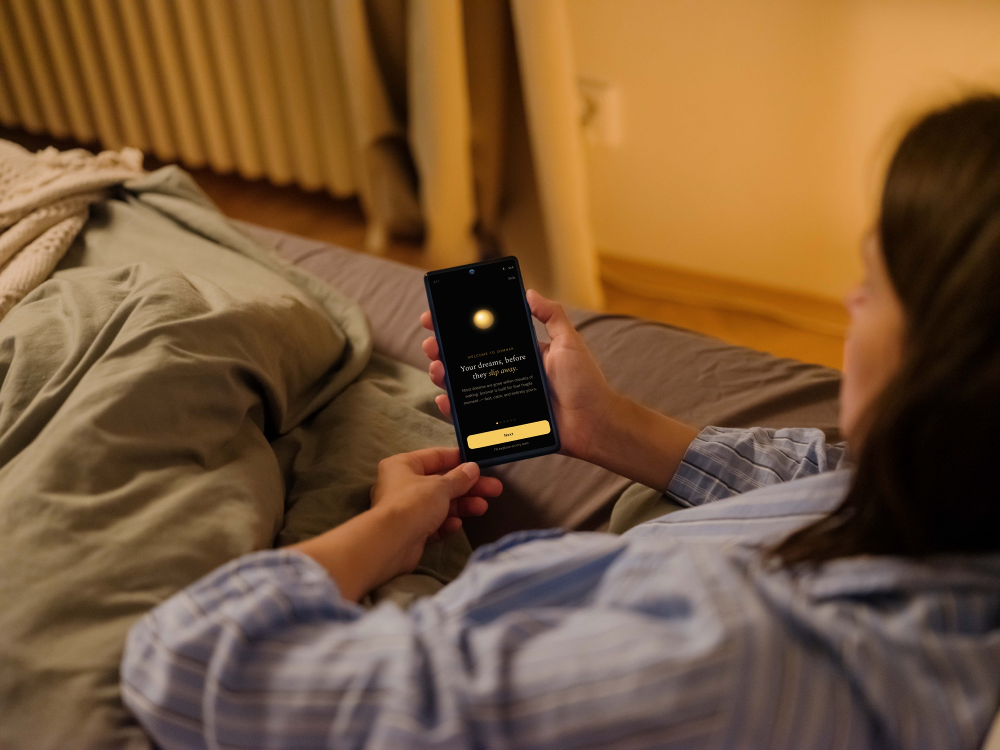
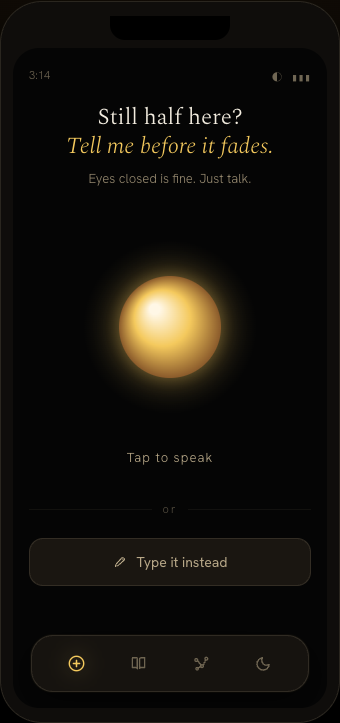
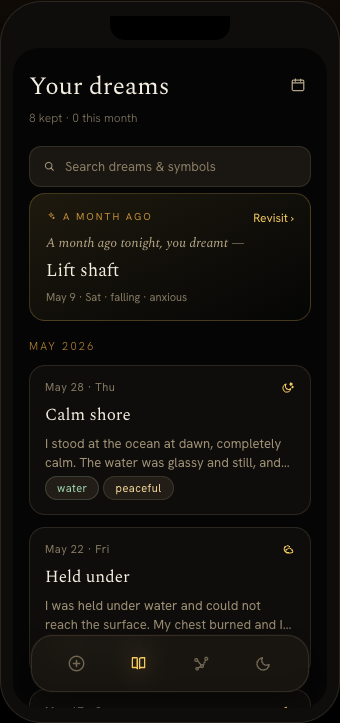
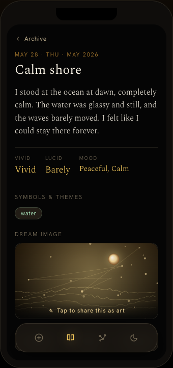
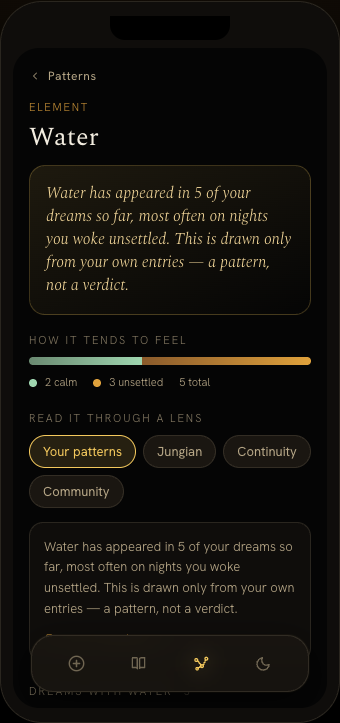
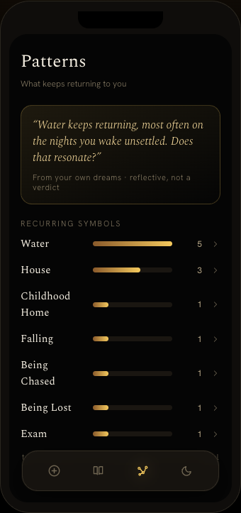
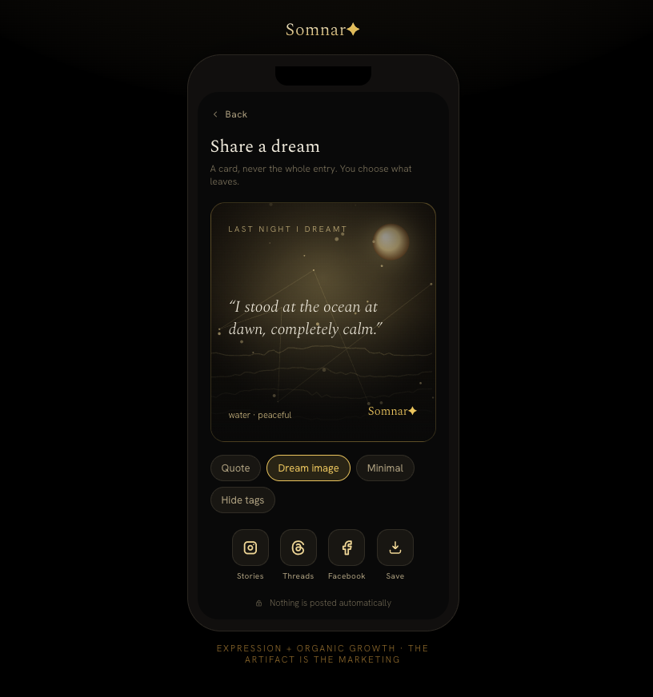

Somnar is a voice-first dream journal. Fast enough to catch a dream at 3am, and built to turn what recurs across your nights into a personal, evidence-backed read on your own symbols.
I designed and built the whole thing myself in a weekend: brand, schema, eight screens, motion, and a working prototype.
Not mockups. These are screen recordings of the working prototype: the first-run tour, capturing a dream entirely by voice, and the pattern layer with lucid mode and cited explanations.
First run
A short guided tour that sets the tone: calm, gold, unhurried. Then it gets out of the way.
Talk to save a dream
Tap the orb and speak. Voice transcribes in the moment, symbols are pulled, and the dream is saved. Your eyes never open.
Patterns, lucid and lenses
Recurring symbols, a lucid-mode read, and explanations through cited frameworks. All built from your own entries.
Capture beats everything else: one big mic, voice-first, zero navigation. From there a dream flows into the archive, generative art, and a pattern layer that gets more personal the more you log.
Capture beats everything.
If catching a dream takes more than a breath, it’s already gone. Voice-first, eyes-closed, zero navigation.
Calm, not clinical.
Gold on black, serif, slow light. The hush of 3am, never a productivity app demanding a streak.
A pattern, never a verdict.
Every interpretation is drawn only from your own entries and cites a named framework. No dream-dictionary claims.
Meaning is earned, and yours.
Capture and archive are always free. Meaning is the layer that grows. Contributing to the aggregate is off by default.
Each entry generates a luminous gold dream-image, tied to its own symbols and mood. It’s the dream’s art in the archive, and a share-card you can post without ever revealing the whole entry. You choose what leaves. The card itself is the marketing.

The whole core loop runs for real in the prototype: on-device, no backend. Dreams persist locally, symbol extraction stands in for the model, and everything is shaped like the production schema.
Most dream apps hand you a stranger’s dictionary: “water means emotion.” Somnar does the opposite. “Water” is never a checkbox. It’s stored with its surface form, its context, and its valence, every single time. Across nights those mentions stack, and a definition forms: “Water, for you, returns most on the nights you wake unsettled.”
days, end to end
screens, fully built
person, solo
Brand, schema, eight screens, motion, and a working prototype. All designed and built solo, with AI tools doing the heavy lifting where they’re strongest.
A small proof that one person, with the right tools and a clear point of view, can take a product from idea to a polished, motion-rich prototype in a weekend.
Two days, three tools, end to end.
 FigmaScreens, flows and the visual system
FigmaScreens, flows and the visual system ClaudeThe build
ClaudeThe build HTMLStructure, built by hand
HTMLStructure, built by hand CSSLayout, styling and motion
CSSLayout, styling and motion JavaScriptInteractions and the working prototype
JavaScriptInteractions and the working prototype